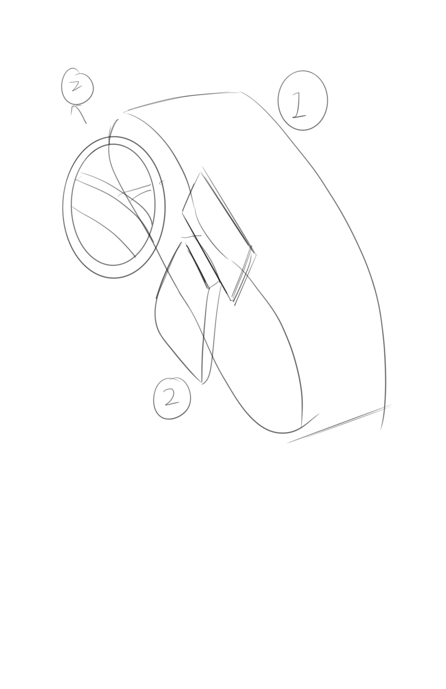
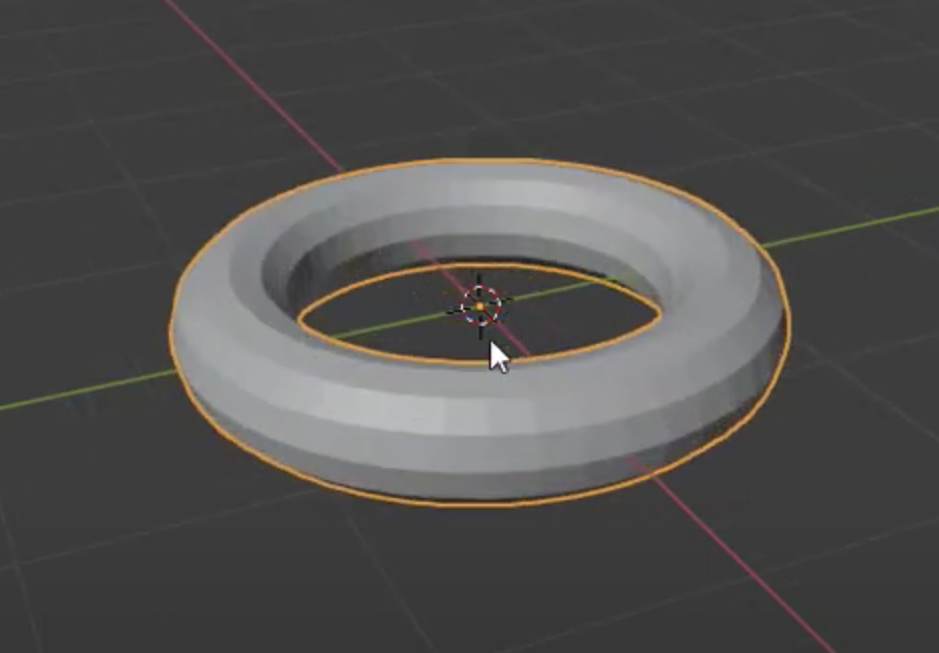
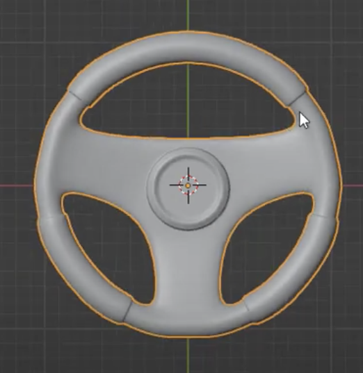
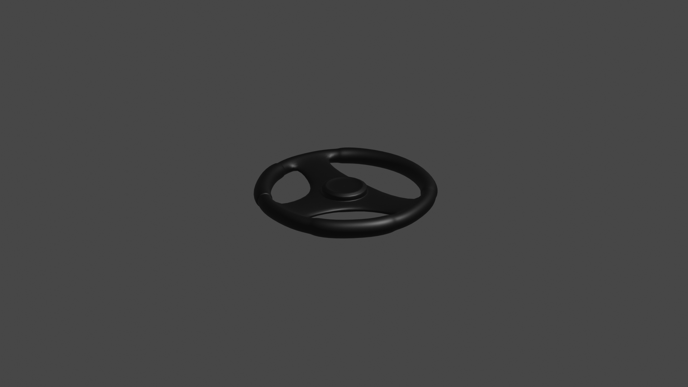
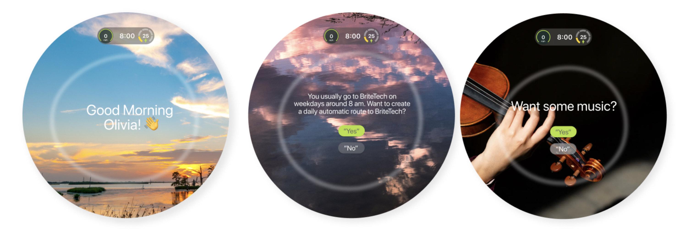
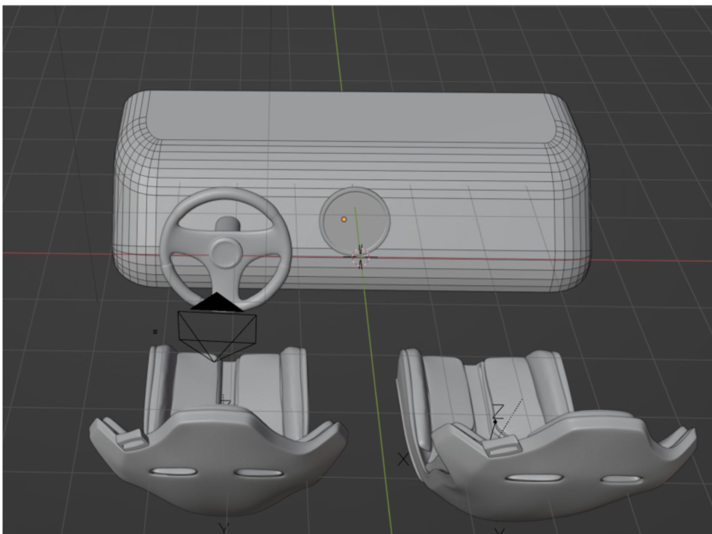
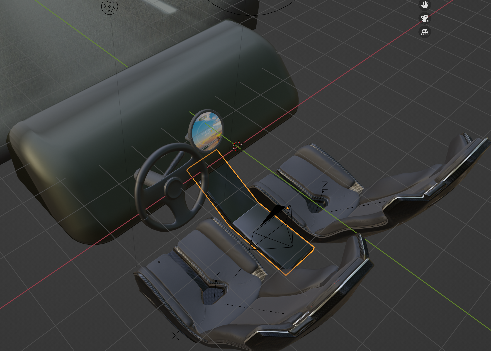
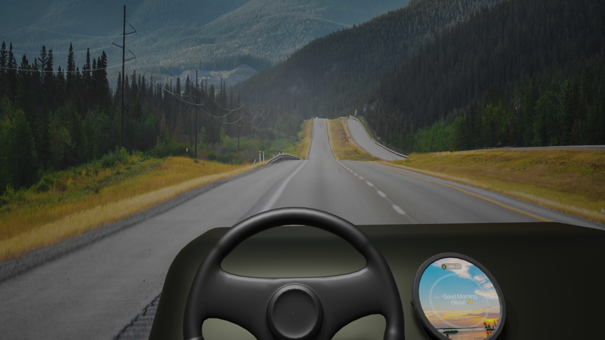

I plan to create a car dashboard interface by breaking it down into three main parts, as shown in the sketch below.
The main car dashboard will be the first part, followed by the steering wheel as the second part, and the display screen as the third part.
In order to create the steering wheel, I found an Youtube Video to follow
1. For the steeliing wheel, I first created an torus
2. Then I added individual origins using three faces inside the torus

3. Connect the individual origins

4. Extrude region and move

5. Add modifier subdivisioin surface and shade smooth

6. Extrude the top round part
Inset face

Extrude the steeling wheel pad part
Apply material and texture
add dashboard and car windshield, round screen; because my interface will be circular

This is what my interface will look like
Apply material

After finished the basic rough model, I added a chair model for scale reference, and found out the size of the dashboard is way too small.
Using the chair as reference for size, I made the dashboard bigger to be able to fit in two chairs.
I also rescale the circular interface, the steeling wheel to make them looks more realistic
I also remove the windshield because it is not helping me present my interface
Then I apply round corner to the dashboard to make it look smoother
Getting rid of the three buttons because they are too far away for the driver to reach
And adding the center console between two chairs
Apply the car interface image to the circular screen
Apply materials to all the parts
To create the environment and make it feel more like you are driving on the street
I first created the "wall" around the main model
Adjust the lighting and adding more lighting to the model
Then I pick an image as someone driving on the street
apply the image to the font of the car dashboard
adjust the camera angle to the point where someone is sitting on the chair
Below is the final outcome
